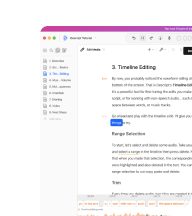
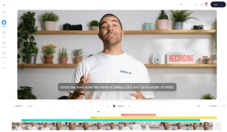
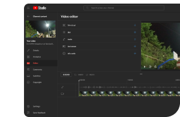
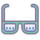

Summary
- Ennely (MacOS) lead designer
- Competitive analysis and user persona creation
- Designed user journeys, wireframes, mockups & HTML prototype
- Addressed time-consuming video content management
- User research, usability tests and iterative design
- App well-received by content creator community
- Company acquired by Meta (Reality Labs)
Overview
Ennely was a video editor assistant that enabled content creators to create a first cut within minutes.
Working with scripted videos editing is a tedious and time-consuming process.
Ennely's AI engine took care of mundane tasks (such as audio sync and sequence selecting), freeing up creators to concentrate on refining their videos using Premiere, Final Cut and Resolve.
I was the principal designer on this project and worked in an agile team of six (including myself).
Effortless editing
Time-saver
Take selection
Adobe Premiere
Final Cut
DaVinci Resolve
Problems
As a company closely collaborating with content creators in the sound engineering industry, our team created a survey which identified three key challenges commonly encountered by many YouTubers publishing scripted videos.
1
Time-consuming file synching
2
Tedious removal of filler words
3
Hassle of selecting the best takes
4
Multiple cameras and mics syncing
Opportunity
"How can we help users to swiftly export a rough cut and empower them to concentrate to craft something unique?"
Competitive analysis
Despite the absence of comparable tools, I dedicated time to analyze different UI’s to identify the best ways to onboard users and import footage from different cameras, microphones, drives and (online) folders.
Descript rules!
Veed.io has a great UI which helps the user feel at ease.
YouTube Studio is OK for some minor editing...
User persona
To develop Ennely, we collaborated with renowned content creators, drawing inspiration from their experiences and insights to shape our persona.
This time, we got persona(l) to discover their biggest pain points.
1
Seamless footage combination
Effortlessly merge multiple video clips and audio tracks
2
Removal of silences and filler words
Get rid of "ehms", "uhms", "errrs" and long pauses right off the bat
3
Fast clip selection
Quick and efficient journey for reviewing and selecting the best takes
Content creators' main needs revolve around audience engagement, monetization & community building.
User journey
Designing the user journey was a meticulous process, focusing on simplicity and speed.
I helped streamline the process of merging video and audio footage from multiple sources, allowing users to swiftly create a first draft.
Loading Figma file...Loading...
Design goals
Our design goals for this tool focused on maximizing efficiency and ensuring user-friendliness.
We aimed to provide content creators with a streamlined experience offering them flexibility over the final output.
Design for efficiency4
User-friendliness4
Flexibility & control3
Design system4
Wireframes
During the wireframing process, I carefully mapped out the key functionalities, including the onboarding flow, aligning them with the MVP user stories.


Mockups
To maintain momentum and foster creativity, our team made a strategic choice before diving into the hi-fi mockups.
We prioritized creating lo-fi versions first and deliver results quickly.
This decision kept the team's morale high!

Prototype
When most of the mockups of the MVP were in place and the team had approved the Figma prototype, I emphasized the need for an HTML prototype to really test out our assumptions.
Within a week we developed a browser based version of the app.
A short demo
What I'm presenting above is how to
1
Sync footage and remove filler words
Ennely effortlessly processes and syncs un-synced, unedited footage, delivering a rough cut within minutes.
Silences and filler words are intelligently removed, simplifying the editing process.
2
Take selection
Grouped takes enable creators to swiftly review and select the best moments.
3
Export to XML
When done, the result can be exported to XML, for seamless transition to Premiere etc for final refinement.
Research plan & (un)moderated user tests
To understand user interactions with the app and assess their ability to create a rough video cut, I created a research plan.
To gather feedback I conducted unmoderated user tests using Maze.
This approach allowed us to gather feedback efficiently and accommodate the limited availability of the content creators.
Iteration based on user feedback
The moderated (conducted internally) and unmoderated user tests yielded insights that shaped the app's further improvement.
For example, we discovered that some users struggled to locate the way to fine tune the duration of a specific take. As a result, we reconsidered that path to enhance discoverability.
Moreover, we discovered a strong preference for an easy-to-use media file import and organization feature.
These insights from both types of tests guided our iterative design process, allowing us to address specific pain points.
Un-moderated user tests provide valuable insights by allowing users to asynchronously interact with a product in their own terms.
Final version and conclusions
Embarking on the journey of developing a tool like this alongside its target audience, content creators and a highly skilled team was an incredibly fulfilling experience.
The seamless pace and our unhurried approach felt perfectly aligned.
...Just as we were preparing for production, an unexpected twist occurred—the company was acquired by Meta.
This acquisition although allowed us to further improve the product, it eventually left us with lingering curiosity about the untapped potential for success as it was abruptly halted from launching publicly(!).
Only recently a similar video assistant appeared in the market by none other than Microsoft:
Thank you for reading! 
ps. This was just one example of my work @Meta. Other projects included the improvement of existing designs as well as the development of a completely new desktop app that improved audio during calls and added background music from Spotify.
Press
Facebook owner Meta close to deal for Greek startup Accusonus
"Meta Platforms Inc (FB.O), the owner of Facebook, is close to acquiring Greek audio software startup Accusonus" —Reuters
Read articleAccusonus raises $3.3M to use AI to help content creators repair the audio in their videos
"Accusonus, the Greece and U.S.-based AI company helping content creators improve the audio in their videos, has raised $3.3 million in Series A funding." —TechCrunch
Read articleOn this page